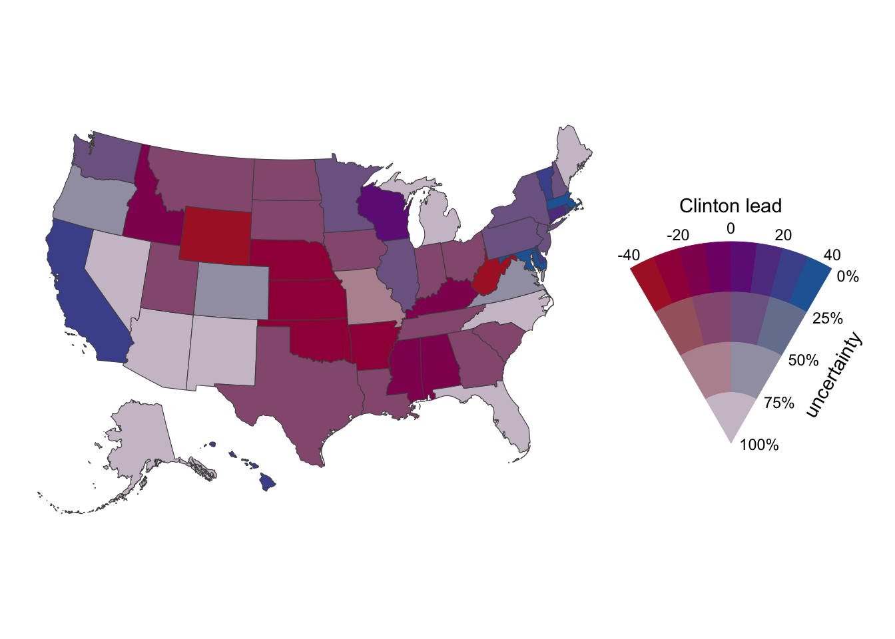

![]()
library(ggplot2)
library(multiscales)Note: The package "multiscales" is highly experimental. Use at your own risk.
Attaching package: 'multiscales'The following object is masked from 'package:utils':
zipAn example of the value suppressing uncertainty scale. Great uses include forecast uncertainity.
July 4, 2018
So I am going to try to use this blog to capture programming tricks and examples of R coding, data visualisation and general musing that I find interesting. This is mainly for personal use and as a nice memory tool.
Below is an example from Claus Wilke’s multiscales package. The details can be found here. I like that it uses geom_sf and one can also use the value suppressing uncertainty palettes. I often want to communicate uncertainty in cartographic mapping and this provides a much better way to do that. More on that article here.
So now for the example that one can use as…thanks Claus
Note: The package "multiscales" is highly experimental. Use at your own risk.
Attaching package: 'multiscales'The following object is masked from 'package:utils':
zipcolors <- scales::colour_ramp(
colors = c(red = "#AC202F", purple = "#740280", blue = "#2265A3")
)((0:7)/7)
p<-ggplot(US_polling) +
geom_sf(aes(fill = zip(Clinton_lead, moe_normalized)), color = "gray30", size = 0.2) +
coord_sf(datum = NA) +
bivariate_scale("fill",
pal_vsup(values = colors, max_desat = 0.8, pow_desat = 0.2, max_light = 0.7, pow_light = 1),
name = c("Clinton lead", "uncertainty"),
limits = list(c(-40, 40), c(0, 1)),
breaks = list(c(-40, -20, 0, 20, 40), c(0, 0.25, 0.50, 0.75, 1.)),
labels = list(waiver(), scales::percent),
guide = "colourfan"
) +
theme_void() +
theme(
legend.key.size = grid::unit(0.8, "cm"),
legend.title.align = 0.5,
plot.margin = margin(5.5, 20, 5.5, 5.5)
)
pold-style crs object detected; please recreate object with a recent sf::st_crs()
old-style crs object detected; please recreate object with a recent sf::st_crs()
old-style crs object detected; please recreate object with a recent sf::st_crs()Warning in seq.default(limits[[1]][1], limits[[1]][2], length = guide$nbin):
partial argument match of 'length' to 'length.out'Warning in seq.default(limits[[2]][1], limits[[2]][2], length = guide$nbin):
partial argument match of 'length' to 'length.out'
@online{dewitt2018,
author = {Michael DeWitt},
title = {Let’s {Try} {Some} {Visualisation}},
date = {2018-07-04},
url = {https://michaeldewittjr.com/programming/2018-07-04-let-s-try-some-visualisation},
langid = {en}
}